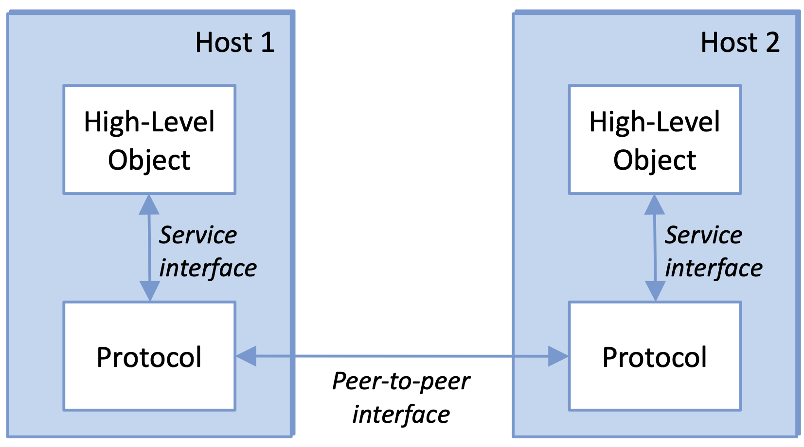

flowchart TD
A[Data] --> B[Protocollo]
B --> C[P Header | Data]
Reti di calcolatori
informatica
Reti di calcolatori
link del libro online: Computer Networks: A System Approach
Foundations
Un network è composto da:
- nodi indipendenti
- informazioni scambiate
- canali di comunicazione
L’obiettivo è quello di compiere dei compiti che non potrebbero essere svolti da un singolo nodo.
Caratteristiche di un rete di calcolatori:
- scopo generale (non ottimizzato per una specifica applicazione)
- flessibilità e apertura (possibilità di aggiungere nuove caratteristiche e nuove applicazioni)
- network
- un netword è un’entità composta da 2 o più nodi o 2 o più reti connesse tramite un nodo
un network è una gerarchia di network → problema di indirizzare i nodi nelle diverse reti
Cost-effective resource sharing
…
Network Architecture and Protocols
Architettura a livelli: ogni livelli aggiunge nuove funzionalità
| Application programs |
|---|
| Process-to-process channels |
| Host-to-host connectivity |
| Hardware |
Interfacce

Protocolli
Un protocollo definisce un’interfaccia tra i livelli dello stesso sistema e con i livelli di un sistema paritetico.
Ogni oggetto protocollo ha due interfacce
- interfaccia di servizio: operazioni su questo protocollo
- interfaccia peer-to-peer: messaggio scambiati tra pari
A volte ci si riferisce sia alle specifiche dell’interfaccia peer-to-peer che ai moduli che la implementano
specifiche del protocollo: prosa, pseudocodice, modello a stati finiti
inter
interadoperabilità: quando due protocolli implementano le specifiche accuratamente
IETF (Internet Engineering Task Force): definisce i protocolli
Grafo dei protocolli
Un grafo dei nodi
- nodi: protocolli
- archi: relazioni di dipendenza tra protocolli
Incapsulamento
Ogni livello necessita di alcune informazioni per implementare funzioni verso i livelli superiori
Un messaggio intero PDU (Protocol Data Unit) è composto da:
- header: informazioni di controllo
- payload o SDU Service Data Unit: informazioni da trasmettere
Il PDU diventa un SDU per il livello inferiore, che aggiunge un proprio header e lo invia al livello inferiore successivo.
Generalmente per i protocolli è sufficiente leggere l’header, i livelli superiori leggono il payload e ignorano l’header.
(immagine slide 1 - 48)
ISO OSI Architecture
ISO (International Organization for Standardization) è un’organizzazione internazionale che sviluppa e pubblica standard internazionali.
OSI (Open Systems Interconnection) è un modello di riferimento per la progettazione di protocolli di rete.
(immagine dei livelli)
Si tratta di una struttura standard per progettazioni di protocolli
- livelli superiori
- livelli inferiori
- Livello fisico: trasmissione di bit su un canale di comunicazione
- livello di collegamento dati: aggrega i bit in frame e gestisce gli errori di trasmissione
- Livello di rete: indirizzamento e routing dei pacchetti
- Livello di trasporto: fornisce un servizio di trasferimento dati tra applicazioni degli host
- Livello di sessione: gestisce le connessioni tra applicazioni
- Livello di presentazione: traduce i dati in un formato comprensibile per l’applicazione
- Livello applicazione: fornisce servizi specifici per le applicazioni
Implementazione
- primi 3 livelli: su tutti i nodi, anche intermedi
- ultimi 4 livelli: solo sugli host
Repeater (livello fisico)
connette due media fisici dello stesso tipo, condividendo singoli bit.
I bit sono decodificati da un lato e ricodificati dall’altro lato.
Bridge (livello di collegamento dati)
Connette due collegamenti(?)
Un bridge scambia frame, i quali vengono controllati e inoltrati. I frame header non vengono alterati, ma la codifica fisica può differire.
Uno switch è un bridge con più porte
Router (livello di rete)
connette due segmenti di rete
trasmette pacchetti con un network header non cambiato, ma rimpiazza il frame header
Proxy (livello di trasporto)
Traduce messaggi da host differenti
TCP/IP Architecture (Internet Architecture)
Due livelli principali:
- livello applicativo: Application, Presentation, Session
- livello di interfaccia di rete: Data Link, Physical
Definito da IEFT
- non implica una stratificazione rigida
- forma a collo di bottiglia
- nuovo protocollo richiede specifiche e minimo un’implementazione rappresentativa (meglio 2)
Limiti della stratificazione:
- non tutti i servizi
- alcuni servizi sono intrisecamente legati a più livelli (es. sicurezza)
Network API
Interfaccia messa a disposizione dalla rete, ovvero interfaccia che il sistema operativo fornisce al suo sottosistema di rete (componente del kernerl che gestisce le comunicazioni di rete)
Socket API
Ogni protocollo fornisce un certo insieme di servizi, mentre l’API fornisce una sintassi con la quali questi servizi possono essere invocati.
Il socket è il punto di incontro tra processo locale si collega alla rete, nonché interfaccia tra applicazione e rete.
L’interfaccia definisce le operazioni per
- creare, collegare il socket alla rete, usare il socket per inviare e ricevere messaggi, chiudere il socket
può essere
(…)
Client-Server Model con TCP
(…)
Performance
La performance di una rete può essere misurata in termini di:
- throughput: numero di bit trasmessi per unità di tempo
- ritardo: tempo impiegato da un bit per viaggiare da un host all’altro
Delle volte si usa bandwidth come sinonimo di throughput, ma in realtà indica l’ampiezza della banda di frequenza
round-trip time (RTT): tempo impiegato da un bit per viaggiare da un host all’altro e tornare indietro (erroneamente chiamato ping time). Proprietà specifica di due host, non di rete!
\text{RTT}_{A \to B} = L_{A \to B} + L_{B \to A}
con connessione simmetrica: L_{A \to B} = L_{B \to A} \implies 2 \cdot L_{A \to B}
Latenza
\text{latenza} = \text{tempo di propagazione} + \text{tempo di trasmissione} + \text{tempo di coda}
dove:
- tempo di propagazione: \frac{\text{distanza}}{\text{velocità di propagazione}} del segnale
- tempo di trasmissione: tempo per trasmettere il messaggio
- tempo di coda: tempo speso all’interno di un nodo (computer, switch, router) per attendere che il messaggio venga processato e trasmesso
In una rete, la latenza è la somma di tutte le latenze
L = \sum_{i=1}^{n} L_i
- messaggio grande → tempo di trasmissione domina
- messaggio piccolo → tempo di propagazione domina
- percorso fissato → propagazione/trasmissioni costante, cambia il tempo di coda
- cambia percorso → cambia la latenza
Jitter
Il jitter è la varianza della latenza
Generalmente generato dalle code degli switch
problema per streaming audio video
Capienza canale
(immagine 1.96)
capienza dei dati contemporaneamente presenti nel canale è pari a
Delay \cdot throughput
ovvero numero di bit trasmessi prima che arrivi il primo bit al destinatario